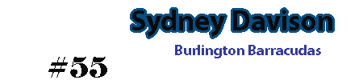

Barracudas
Team identity shown on the original website.
Sydney's original site featured the Burlington Barracudas Junior / Intermediate AA team for the 2015–2016 season.

The team aimed to compete at a high level in every game, supported by on-ice and off-ice preparation.
Team information is from the original 2015 site and is retained as historical context.
Original contact: slangdon@cogeco.ca

Team identity shown on the original website.